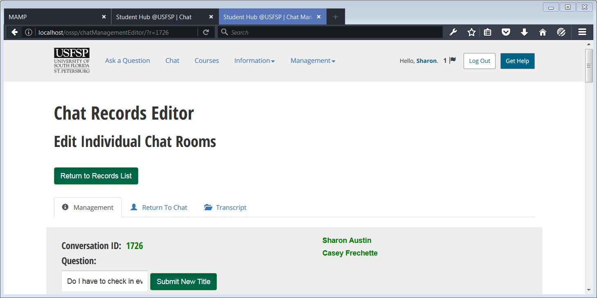
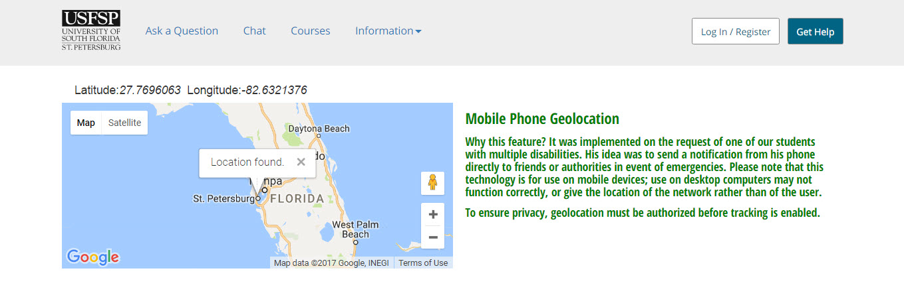

Schools must respond to sexual violence connected to the school’s education programs and activities, including academic, educational, extracurricular, and athletic activities.
These incidents can take place in an off-campus residence, at an off-campus class, at fraternity or sorority houses, during athletic team travel, or at events for school clubs that occur off-campus.
If you are a Responsible Employee or CSA, this is a reportable incident. Follow your institution's reporting policy.
Source: HAVEN for Faculty and Staff
Accessed October 31, 2017
Some schools also designate anonymous reporters, such as non-professional counselors and advocates, who must report offenses but do not need to include identifying information
Source: HAVEN for Faculty and Staff
Accessed October 31, 2017
The Online Student Support Portal "builds-in" methods by which anonymous reporting may take place to official channels
The Router
Live Chat is available on scheduled availability. When a router is not on shift, automated messages inform the user that the question will be reviewed within a certain amount of time. All chats are reviewed to ensure that they receive proper handling, and any that are deemed sensitive may be flagged.
Real-time Notification System -- SMS based, which has proven to be robust in times of emergencies, and email based.
Built-in, Context-Sensitive Help
Geolocation
Platform Initiative: Review chats to ensure they get to the proper authority.
Not only does the platform make it easy to direct chat conversations to authoritative help, the platform has the ability to "archive" certain chat records for authorities's use.
Platform Initiative: Geolocation
Although meant for mobile phone use, on certain browsers geolocation is enabled.

The chat platform allows routers to forward conversations to authorities, and to flag certain conversations for use by authorities.

Geolocation feature built into the platform on the recommendation of Robert Beasey, who is one of our students who had multiple disabilities. He recommended this feature specifically as a safety feature.